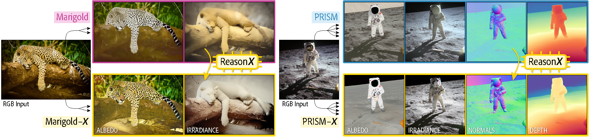
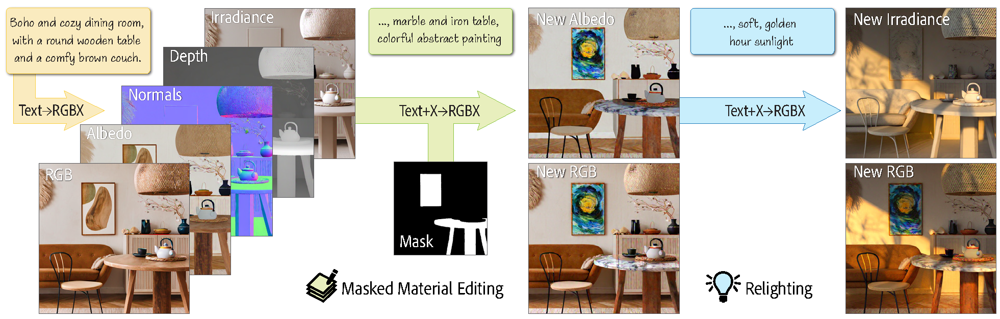
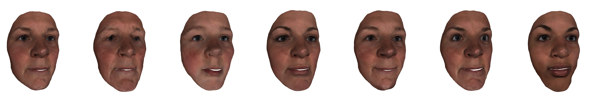
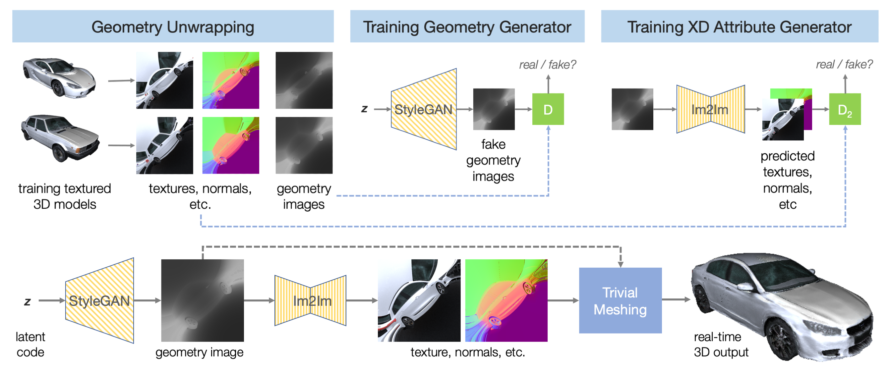
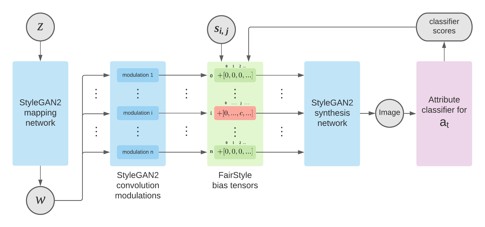
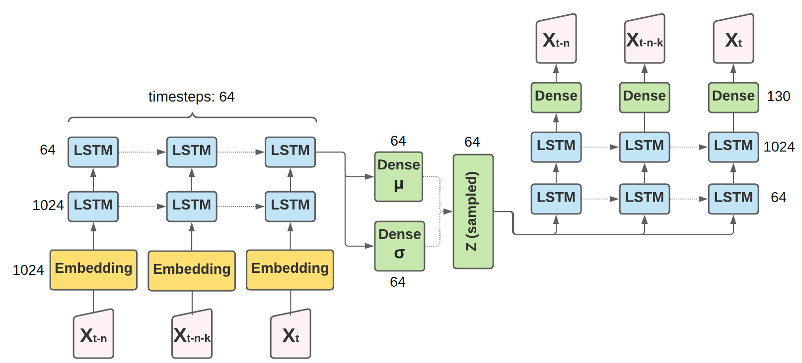
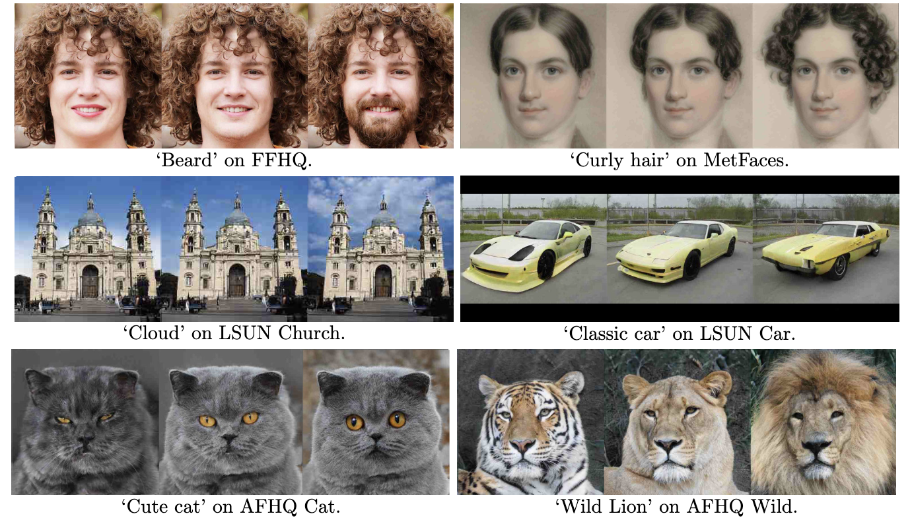
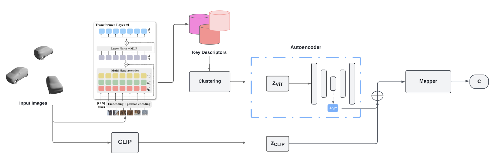
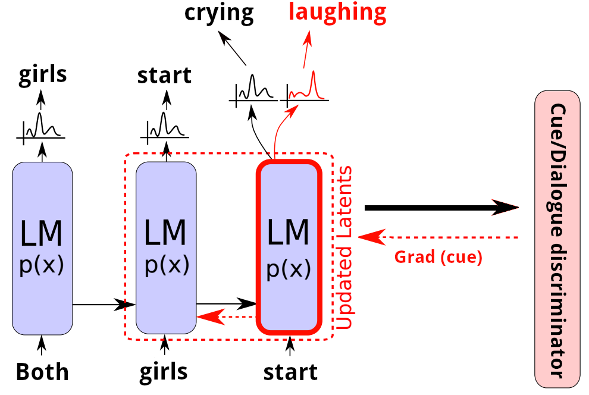
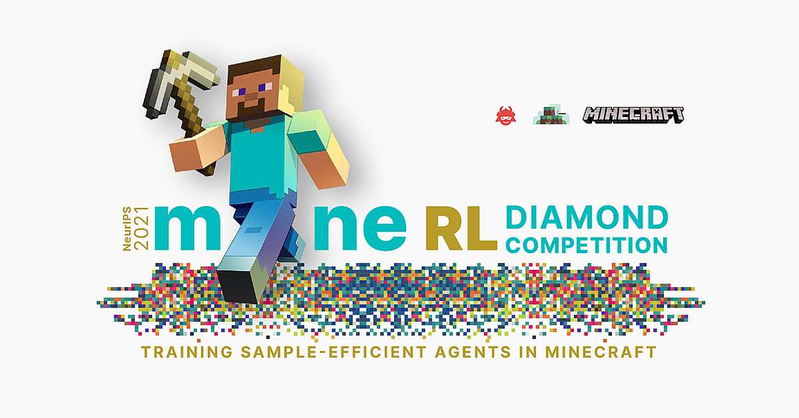

I am a PhD student at Imperial College London, advised by Prof. Stefanos Zafeiriou. My research focuses on generative modeling for vision, neural rendering, and intrinsic scene understanding. I have published at venues including CVPR, ECCV, SIGGRAPH, WACV, and NeurIPS.
Before my PhD, I worked as a Machine Learning Engineer at Hugging Face, where I was a core contributor to the Transformers library.
News
- March 2026 PRISM accepted to ICPR 2026.
- March 2026 Released Geo-ID, a test-time method for cross-view consistent intrinsic estimation via geometric consensus.
- Feb 2026 ReasonX accepted to CVPR 2026 — an MLLM-guided framework for intrinsic image decomposition. Collaboration with Anna Frühstück at Adobe Research.
- Summer 2026 Research internship at Adobe Research, London.
- 2025 Released PRISM, a unified framework for photorealistic reconstruction and intrinsic scene modeling.
- Summer 2025 Research internship at Adobe Research, London.
Publications
-

-

-

PRISM: A Unified Framework for Photorealistic Reconstruction and Intrinsic Scene ModelingICPR 2026 -

-

-

-

MIDISpace: Finding Linear Directions in Latent Space for Music GenerationSIGCHI C&C 2022 · Honorable Mention -

StyleMC: Multi-Channel Based Fast Text-Guided Image Generation and ManipulationWACV 2022 -

3D-LatentMapper: View Agnostic Reconstruction of 3D Shapes from a Single ImageNeurIPS 2022, WiML Workshop -

Controlled Cue Generation for Play ScriptsNeurIPS 2021, CTRLGen Workshop · Best Paper Award -

Diamond: A MineRL Competition on Training Sample-Efficient AgentsNeurIPS 2021, Competition Track
* denotes equal contribution